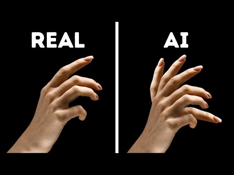

Vad är AI? 🤖💡🖥️
AI, eller artificiell intelligens, är när datorer kan lära sig
och tänka lite som människor. Den kan känna igen bilder, förstå
språk och ge förslag, och blir bättre ju mer den övar.
Den första hunden är skapad för något år sedan, medan den andra är ny. AI har blivit mycket bättre på att skapa bilder som ser verkliga ut.

Förr hade AI problem med att skapa mänskliga händer,
men har blivit myvket bättre på det.

Så det blir allt svårare att veta vilka bilder
som är verkliga eller skapade av AI.
Nu ska vi göra ett quiz som kommer från Aftonbladet
där ni gissa om en bild är sann eller falsk.
Deepfake 🎭💻
AI kan ändra filmer så att personer ser ut att säga eller göra saker de inte gjort
Klicka här för video
Klicka här för nästa video
Klicka här för sammanfattning
🎉 Grattis! 🎉
Nu har du lärt dig om AI, bluffar och deepfake! 💡
- 👀 Var alltid nyfiken och tänk kritiskt när du ser bilder och filmer.
- 🔍 Kontrollera alltid källan innan du litar på något.
- 🚫 Klicka aldrig på länkar från okända eller konstiga meddelanden.
- 🤝 Lita bara på personer och konton du känner igen.
- ✨ Ha kul med teknik, men tänk efter innan du delar eller tror på allt du ser!
Nu kan du göra smarta val online! 🌟💪